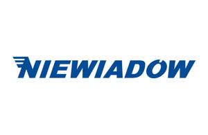

Trade Mark Journal No.2025/024 13 June 2025
UK00004208833 25 May 2025 (12,35)

- Class 12
- Trailers; Baggage trailers; Utility trailers; Semi-tractor trailers; Tractor trailers; Trailers for use with trucks; Trailer trucks; Vehicle trailers; Trailers [vehicles]; Horse trailers; Bicycle trailers (riyakah); Cargo trailers; Transport trailers; Refrigerated trailers; Trailers for towing boats; Equipment trailers; Road trailers; Camping trailers; Canopies for trailers; Windows for trailers; Bicycle trailers; Drawbars for trailers; Trailer hitches for vehicles; Bodies for trailers; Trailer chassis for vehicles; Trailer chassis; Livestock trailers; Trailer tents; Trailer axles; Tow bars for trailers; Trailer hitches; Trailers for transporting bicycles; Garbage hauling trailers; Bulk hauling trailers; Couplings (Non-electric -) for towing trailers; Trailers for motor land vehicles; Trailer couplings; Load carrying trailers; Trailers for petrol tankers; Combination camping recreational vehicle and horse trailer; Trailer supports; Tarpaulins adapted [shaped] for use with vehicular trailers; Child carrying trailers; Portable babies’ seats for vehicles; Mudwings for vehicles; Towing hitches of metal for vehicles; Screw-propellers for boats; Towing trucks; Children's seats for use in vehicles; Towing hooks for vehicles; Towing pins of metal for vehicles; Spoilers for vehicles; Hooks [tow hitches] for vehicles; Children's safety seats for vehicles; Horse vans; Towing tractors; Vans [vehicles]; Tow trucks; Children's seats for use in cars; Truck tractors; Babies' buggies; Children's safety seats for cars; Railway bogies for transporting trailers by rail; Interior panels for vehicles; Mudguards for trucks; Drive-chain guards of two-wheeled motor vehicles; Drive-chain guards for two-wheeled motor vehicles; Platform trucks; Truck campers [recreational vehicles]; Babies' carriages; Wooden seats for vehicles; Trucks; Spoilers for water vehicles; Tow tractors; Seat trays adapted for use in vehicles; Treads for vehicles [tractor type]; Children's safety belts for use in vehicles; Go-kart transport trucks; Caravan spoilers; Airplane towing vehicles; Fitted liners for the cargo area of vehicles; Vehicles for the tipping loads; Leaf-springs for vehicle suspensions; Motor vans; Camper vans; Tipping apparatus, parts of trucks and waggons; Motor car derived vans; Electric trucks [vehicles]; Spoilers for air vehicles; Portable children’s seats for vehicles; Truck campers; Self-propelled loading vehicles; Trucks with a crane feature incorporated; Seat posts [parts of vehicles]; Undercarts for vehicles; Fitted truck bed liners; Wagons (Refrigerated -) [railroad vehicles]; Refrigerated wagons [railroad vehicles]; Semi-trailers; Tipping bodies for lorries [trucks]; Frames of two-wheeled motor vehicles; Frames for two-wheeled motor vehicles; Curtain sheets adapted for motor land vehicles; Hitches for tractors; Bumpers for vehicles; Trash containers adapted for use in vehicles; Children's car seats; Racks for vehicles; Trailer parts and accessories.
- Class 35
- Promoting a series of films for others; Retail and online retail services connected with the sale of trailers, trailer parts, trailer accessories, and camping equipment.
Maciej Karniej